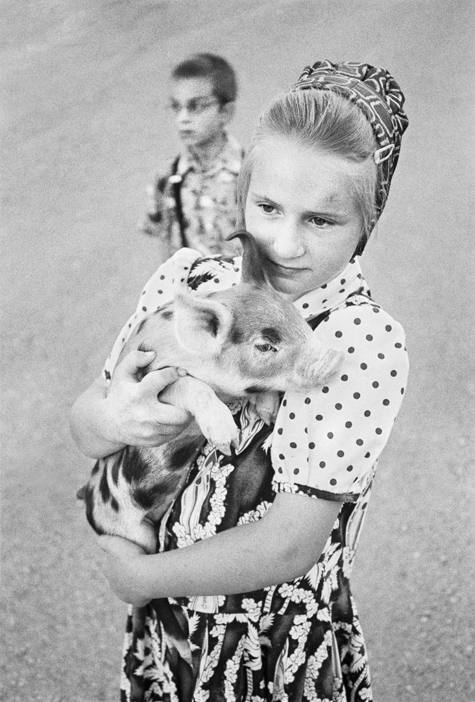
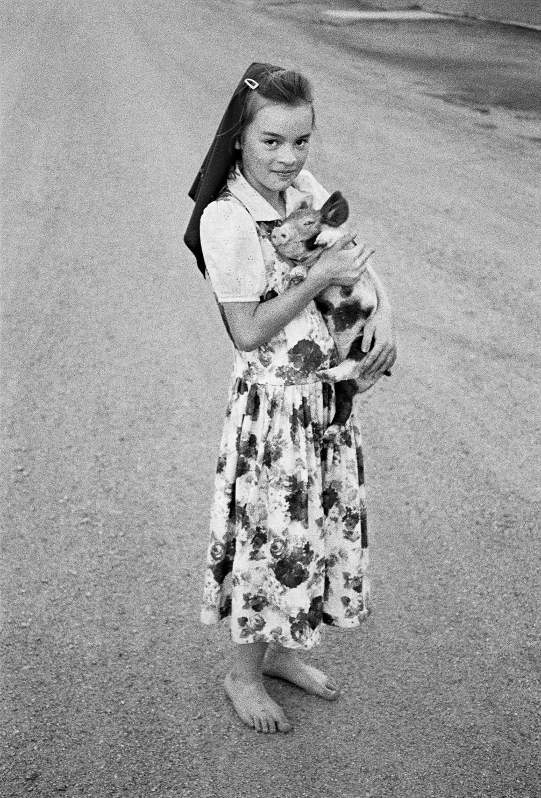

David Vasilev found a beautiful anomaly in the Dakotas. It was while photographing the Lakota tribe in the Great Plains of South Dakota that he was told of the German-speaking Hutterites, a community of pacifists with roots traced to the 16th century. The Bulgarian-born photographer found himself in a pocket of space where the spinning of time seems to have come to a halt. He spent a month photographing members of the Hutterite colony, focusing on the daily nuances of the youth. The resulting photographs beautifully capture them in moments of work and play, inviting us into a rarely-seen world encapsulating elements of humor, warmth, and youthful naiveté. Each shot seems to exist in an otherworldly fusion of past and present. We recently spoke to Vasilev about the series.
I went to the Lakotas with the idea to shoot there for a week or two. So long story short, after I was ready to leave South Dakota, I asked the Medicine Man I was staying with, "Can you recommend a place nearby? I'm looking for characters." He thought about it and said, "There's this German speaking Wasichu, they're like a day and a half drive from here. Give me your map." This was 2004 when cell phones still had black and green screens, and there was no GPS. So he made a couple of spots on the map.
I left the reservation and drove for about 12 hours. I continued driving and ran out of gas. I sat there for one, two, three hours - god knows how long. At one point, the machine that harvests the grain was coming and this guy pulled over. This older man said, "You run out of gas? What are you doing here?" I told him that I'm a photographer from Bulgaria looking for the Hutterites but I ran out of gas and didn't find them. He said, "Well, young man, it's your lucky day. I'm one of the Hutterites." He gave me gas and we drove to the colony. I met the elders, I met the priest who is like the mayor, the teacher, everything. They are the most religious people I've met so far. The kids don't learn any history, geography, or science. They just read the Bible.
There was a gang of kids always following me. They would sit quietly, just looking at me, kind of just stare at you like you'll see in some of the pictures. They just had no idea who the hell I was. Everybody is always doing something, so the kids are helping all the time - everything from the farm, working with the animals, the fields, and the girls help in the kitchen. I think only Sunday was their free day, but it wasn't really a free day because they have three hours of prayers and old German songs they were singing. I started to realize that there's actually no music, no sports. They really don't know anything about the outside world; I guess that's how they preserve their heritage. One day I was bored and had a soccer ball in the car. One by one these little youngsters starting coming up to me. They looked at me like I totally fell down from the moon and they looked at the ball like, "What is this for?" I kicked the ball to one of the kids and he picked it up with his hands. I was like, ''Nein, nein, nein," and I'm pointing to his feet. I tried to explain the rules. I was like, "You guys are on this team. I'm on this team." I lost them there and realized no one was getting the concept of teams. They're all together so they're like, "Why do we have to separate?" I will never forget the day I taught the Hutterites soccer. Eventually we just started kicking the ball around.
When I hung out in the beginning they were interested in me, and then eventually nobody really cared that I was there. They started doing their own thing and that's when I started following them more. I became a Hutterite kid and I was like one more of them running around looking through a loophole in time and space.
There was a girl named Else and she was maybe 12 years old. She was playing around barefoot with this pig, and I took some pictures of her and she asked me, "Have you seen the ocean?" I didn't realize that she doesn't have any knowledge of geography, so I asked "Which ocean?" and her eyes widened. She said, "There's more than one?" That was the moment when I realized where I was, how differently they grow up, and how naively beautiful their lives are.